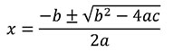

In an earlier program, we looked at root solving of polynomial equations. A polynomial is an expression of the form:

You can find values of x that satisfy this equation (which are called roots) using the quadrative formula:

Build a Python class that has three attributes, A, B, and C.
evaluate function given a value X, returns an actual float representing the result of the polynomial when X is plugged in.findRoots function that returns a tuple representingn the roots of the polynomial (x values which yeild 0). Return an empty tuple when there are no rational roots (see pe18)__str__ method such that when the polynomial is printed a proper string representation is displayed.As an example, your class should be able to work with the following program:
p1 = Polynomial(1, 5, 6)
p2 = Polynomial(2, 4, 2)
p3 = Polynomial(5, 5, 6)
print("Roots for p1: ")
for root in p1.findRoots() : # should go around twice, printing -2 and then -3
print(root)
print("p2 has", len(p2.findRoots()), " roots") # should print 1, since p2's root is -1 only
print("The following polynomial has no roots:, p3) # p3 should print as 5x^2 + 5x + 6
print(p1.evaluate(10)) # prints 156